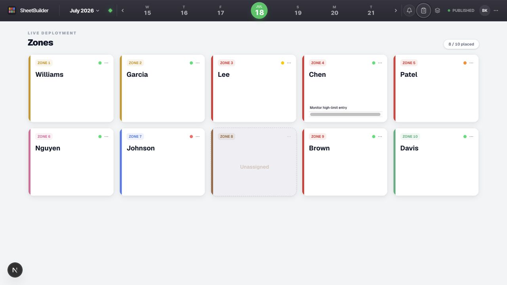
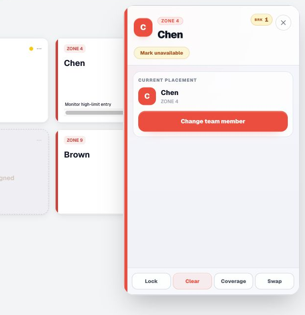
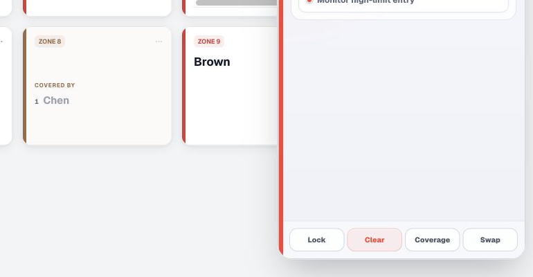

Swap / Change Team Member
Replace a filled position. The picker starts with scheduled choices for the slot; search can reach the broader eligible roster.
Grave Shift · Live Deployment
Making updates to an existing night
SheetBuilder is the live working view of the night's deployment. If you are stepping in to update an existing sheet, you can confirm the date, move a Team Member, record additional coverage, adjust task lines, and print the revised night without rebuilding anything.

Current SheetBuilder components, shown with training names and no live operational data.
Open SheetBuilder and enter your 6-digit ops PIN.
Use the highlighted day, week strip, or calendar to confirm the Grave night you intend to change.
Work from a published night. Changes apply to the working sheet immediately; there is no separate Save button.
Make the Common Changes
Every placement is handled from its card. Open the card to reach the Placement Pad, where the actions for that Team Member and position stay together.
Replace a filled position. The picker starts with scheduled choices for the slot; search can reach the broader eligible roster.
Open an Unassigned card and choose Assign team member to fill the position.
Remove the Team Member from this position only. They remain part of the night.
Remove the Team Member from every position for the night and move them to Called Off.

The current Placement Pad keeps the edit controls beside the board.
When one person will carry an open area, start from the card of the person doing the extra work—not from the empty destination.
Open the covering Team Member's card.
Choose Coverage, then select the Zone, Restroom, Auxiliary area, or custom label.
Confirm the empty destination now shows Covered by and the correct name.

Finish With Confidence
A placement change is only part of the night. Check the task lines, overlap view, and final preview so the floor receives the same plan you see on screen.
Open the card, choose Tasks, then add a task or select an existing task line to revise it.
Use the layers control to review break waves and the PM and AM overlap crews, then return to Deployment.
Open More actions and choose View Print Preview. Confirm assignments, tasks, and coverage before printing.
SheetBuilder keeps the operational picture connected as the night changes—from the people on the board and role fit to coverage, overlaps, and the printed floor sheet.
Confirm the correct published night.
Scan Zones, Restrooms, and Auxiliary.
Swap, assign, clear, or mark unavailable.
Add coverage and task notes where needed.
Check the Overlap sheet and Print Preview.
Sign out when you leave the ops station.